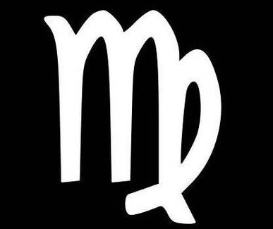
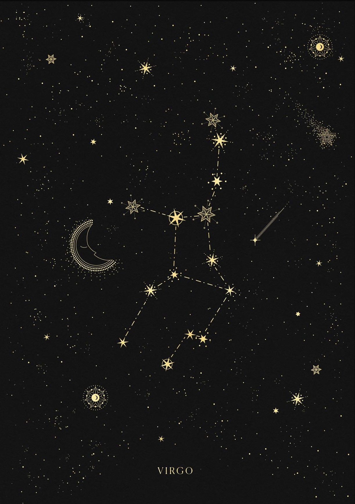

your sun is in...
virgo

"The Virgin"

Characteristics of a Virgo
* organized
* kind
* hardworking
* analytical
* loyal
* resourceful
* nurturing
* organized
* kind
* hardworking
* analytical
* loyal
* resourceful
* nurturing
Sun Signs
Just as the sun is the center point of our solar system, the sun signs represent the center aspects of a person. Your sun sign is one of twelve zodiacs that is based on the position of the Earth in relation to the sun on the day you were born. Because the sun has the strongest pull on the earth, sun signs influence people the most. Therefore, your sun sign can tell you the core characteristics of who you are. Astrologists say this sign signifies how you express yourself to the world.
Element
Each sign is represented by one of four elements: Fire, Earth, Air, or Water. The elements represent a ruling quality that the three signs within this element all share.
Virgo Celebrities
Beyoncé
Born: September 4th, 1981
Zendaya
Born: September 1st, 1996
Nick Jonas
Born: September 16th, 1992
Blake Lively
Born: August 25th, 1987
Keanu Reeves
Born: September 2nd, 1964
Ruling Planet:
Mercury rules communication, thinking, and technology
The ruling planet of a sign determines many of its associated character traits. Mercury is the planet of thinking and technology, which translates directly into Virgo's analytical and organized traits, much like a computer. They are often considered perfectionists, focusing on the tiniest details and making sure everything is up to their high standards. They also have a tendency to become overwhelmed from putting too much on their plate, due to their extreme dedication.
The Sign's Quality:
A sign's qualities correlate strongly to their relation to the seasons. The mutable signs all mark the end, or changing, of the seasons. The Earth enters Virgo during the final month of summer, making their traits focused on a readiness for colder times. Virgos place a strong focus on detail, which helps in their preparation and anticipation for these changes. This also plays into their nurturing qualities, as a Virgo's care and concern for everyone makes them a sort of mother figure, always prepared to fix anyone's problems.
Mutable
geminis are falsely stereotyped as
nit picky
when in reality they are systematic, committed, and caring
listen to your daily horoscope on spotify